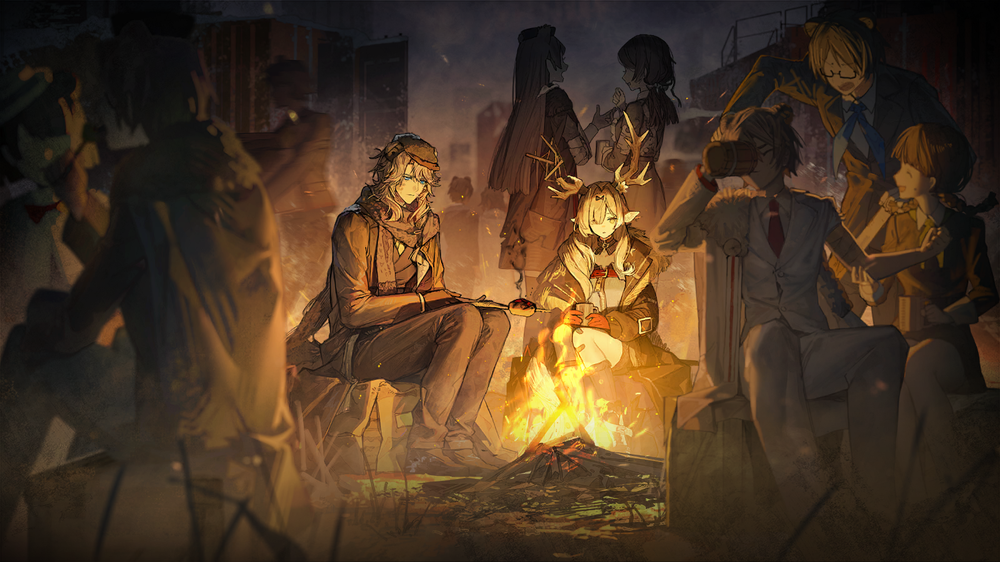
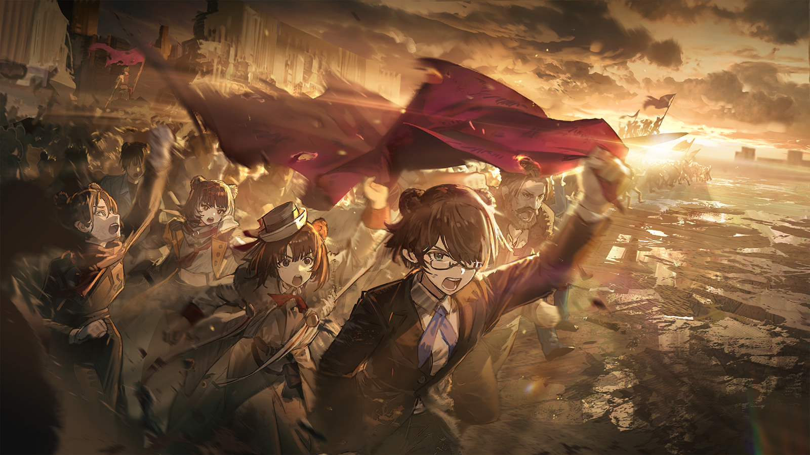
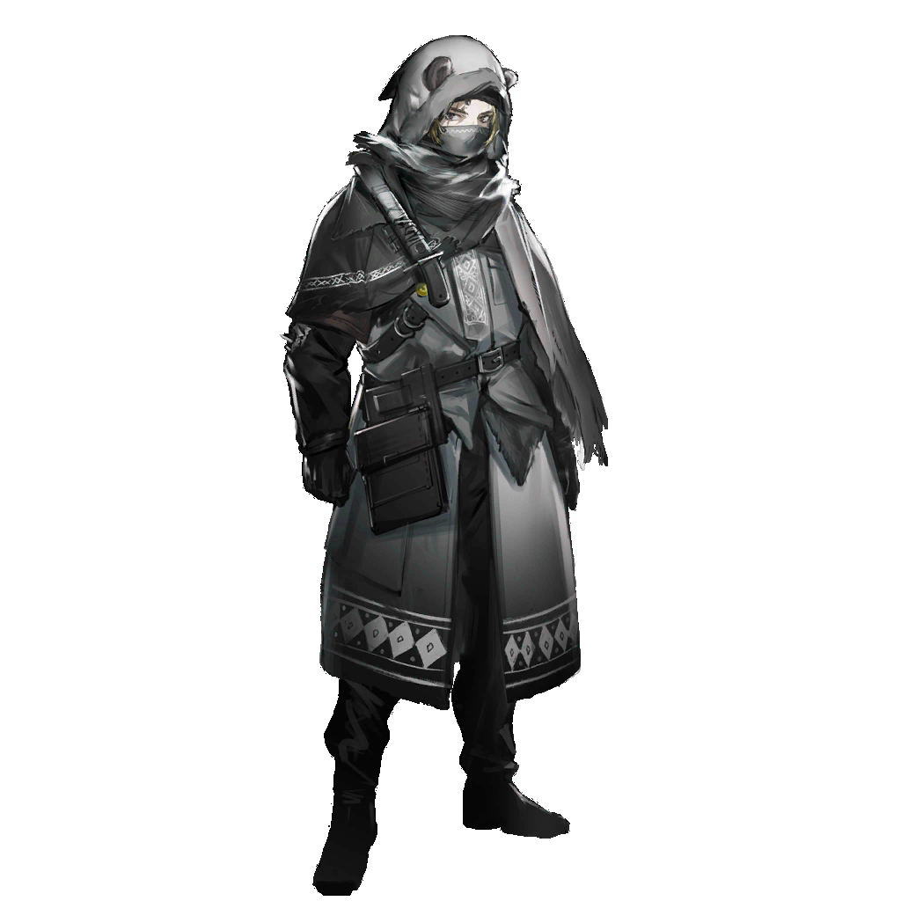

阿洛伊泽
......
没有了，没有了。一路上都再没有得不到帮助和收留的感染者了。
“我的决定是正确的。”
“我的决定是正确的。”
在前往收治中心的路上，她反复地确认着。
可是，接下来呢？要怎么做，才能让这样的情况维持长久？

维特
......我明白了。
维特
阿洛达，你应该知道，近卫军制服胸前的红，其实是代表鲜血的红。

阿洛伊泽
......
阿洛伊泽
一个在战场上杀敌无数的士兵，用衬布兜住自己流出来的肠子和内脏，一步步爬回营地，只为代替那些没能回来的同胞感受片刻胜利。
阿洛伊泽
等他死时，血已经浸透那段从衬衣上撕扯下来的布料，紧紧黏住士兵逐渐僵硬的身体，贴在他的腹腔上。
维特
是的。所以对这件事，你不必太过自责。你做出了果决的判断，这就是它的性质，此外再无其他。
阿洛伊泽
可我毕竟是在未经审判的情况下，就擅自将他处置——
维特
特殊时期，军官手中有些先斩后奏的权力不是很正常吗？
维特
甚至不用军事法庭来做出裁断，只要是有眼睛的人，想必都会认同你做出的这个艰难的决定。

阿洛伊泽
那普拉多的家人，还会遭到牵连吗？

维特
我只能说，我并未在你刚才的报告中，听到任何关于他的行动是受到家族指使的内容。
维特
但这不代表他们的下场得到了任何保证。
阿洛伊泽
......这是什么意思？
维特
你只是又一次只看见了“真相”，却没尝试去拼凑背后的成因，是不是？
维特
卢宁伯爵通过与你父亲的往来，在几年间就从一个只能守着小作坊的荣誉市民，变成了拥有横跨圣骏堡数个区域的纺织厂的新贵。
维特
这样的速度，恐怕任谁来看都只会认为并非出自他本人的努力。而当他依仗的对象失去往日的光环，再不能提供更多帮助时——

维特
无论他是反过去将旧主吞噬，还是与其一同倒塌，在这动荡中产生转移的资源都不会流到那些原本就一无所有的人手中。
维特
这就是现今乌萨斯面临的最大问题。无论面包的总数有多少，都无法照顾到每个人的肚子。
维特
我们喂不饱......所有人。
阿洛伊泽
......
维特
所以，阿洛达，你应该担心的实在不是某些人会不会突然因为你的举动从云端跌落。
维特
如果你仍想有所作为，那就仔细去想想我说的话吧。

阿洛伊泽
......

阿洛伊泽
在更多人被迫变成驱动乌萨斯这台庞大机器的燃料之前，我们必须有所作为。
阿洛伊泽
......我必须......

别乔克
阿洛伊泽，小姐。

别乔克
您又、又来了。大家都，很好。别担心。

阿洛伊泽
“小枝条”。
别乔克
嗯？
阿洛伊泽
将军呢？

别乔克
“将军”？那是，谁？
阿洛伊泽
......赫拉格先生在吗？
别乔克
他在、在和一些小朋友，一起，看书。

阿洛伊泽
小朋友？比你还小的朋友吗？

别乔克
我已经，不小啦！
别乔克
再过，几个月，我就——十六岁了！
阿洛伊泽
十六岁，如果你是贵族子女，就已经有正式的继承权了，是大人了。

别乔克
但我不是，我也，不想是。
阿洛伊泽
那你想去一个能讲述自己的故事，能为同伴争取公正待遇的地方吗？
别乔克
我们是，能去，作证了吗？
别乔克
坚雷姐姐说，法庭，是这样的地方。
阿洛伊泽
......不，别乔克，这次还不是。我不会骗你，但这次不是去作证。
阿洛伊泽
有一个提案，叫做《冬季资源调配紧急法》，将会在圣骏堡第一次举行的公民大会上进行投票决议。
阿洛伊泽
如果这个提案通过，将能拯救无数在这个冬天里无法取暖的民众，拯救无数因为资源枯竭而失业的工人。
阿洛伊泽
在这之前，你可以去发出倡议，去讲述你的故事，去获取更多人的支持——你能帮助提案的通过，你能帮助你的同胞。
别乔克
那我，要去。
阿洛伊泽
但这意味着你要出现在人群面前，里头不乏面目丑恶，和你从前在矿区里见到的那些“老爷们”别无二致的家伙。
阿洛伊泽
而且，这甚至可能会很危险，感染者现在仍然不被允许独自走上街头，你会变得非常显眼。虽然我和赫拉格先生都会保护你——
别乔克
我要——我要去！
别乔克
我想去。就算危险，也要去。
阿洛伊泽
......好。
阿洛伊泽
那让我来想个办法，让他们把本该属于你的身份，还给你。

费奥多尔
你回来了。

费奥多尔
看你的表情，是得到什么确认了吗？
维特
我的确......收到了一份检举报告。
维特
来自瓦西里的女儿。

费奥多尔
阿洛伊泽？
维特
您记得。
维特
用她的话说......“这一切已经触及我的底线，为避免更多人因父亲的荒唐举动遭害，我必须做出选择。”
维特
这份报告，或者说证词，暴露了他想要拉上沃尔金娜公爵与主战派结为同盟的企图，的确能让瓦西里被停职调查，甚至暂时收押。
维特
但鉴于即使现在利用他的倒戈作为攻破主战派内部的切入点，也无法触及目前问题的根本......
维特
我建议先将这份报告，以及其他相关的调查结果封存，留待日后使用。
费奥多尔
如果用这些证据能将他掌控，那一个副议长当下的态度如何，就已经不再重要了。
维特
正是如此。

费奥多尔
真是有意思......之前是卡托加区的那些学生，现在是近卫军里的新一代。我们的年轻人大都已经醒过来了。
费奥多尔
可那些顽固的、垂暮的旧人和老人呢？他们为何仍对矿产衰减所指向的矛盾与困难视而不见？为何只执着地想要对外人发难？
费奥多尔
这些人难道不像是乌萨斯的顽疾......究竟是从何时开始，乌萨斯竟然失去了战胜体内的疾病的力量？

维特
陛下......虽然您可以将他们视作顽疾，可他们同时也是乌萨斯赖以为生的血肉。
维特
可喜的是，我们看到了这个国家正在孕育一股新生的力量，尽管此刻他们还是未能冲破冻土的幼苗......我们都希望他们还有一点时间。
费奥多尔
你说得对......“顽疾”还是“血肉”，该由谁来区分呢？
费奥多尔
......我又如何能够确保，当这股力量破土而出时，我不是他们眼中的“国家的顽疾”？


维特
......陛下？
费奥多尔
......
费奥多尔
维特，你实话告诉我，这样下去，《冬季资源调配紧急法》最终通过的可能有多大？
维特
如果仍然只是靠着相信人的良知去推动进程，那么，可能性不足三成。
维特
我已经说过，没有人乐意将自己的利益拱手让人，您这样做是想给他们留下最后的颜面，可并不是谁都会领情。
维特
您也许是在将善意，释放给一群野兽。

费奥多尔
......最后一次了。
费奥多尔
如果这群野兽仍不领情，那这就将是他们最后一次凭借“天赋权力”坐在牌桌上的机会。

阿米娅
能离开这里的话，还是先离开吧。至少我们还没有听到区域警报响起。

Mon3tr
我们已经在黑漆漆的地方走了好久了，Raidian，你说的出口在哪里呀。
PLAYER CHOICE // 玩家选项
[1]Mon3tr，你有夜视能力吗？
【以下剧情 · 对应上述任一选项后的接续】
Mon3tr
有是有，但和看不见也没什么区别，都是墙壁和楼梯，连个应急通道标志都不放。

Raidian
能分清材质吗？门和墙壁是不同的。即使颜色一样，材质也不相同。
Raidian
你再看看，但不要贸然上手去摸，这些门说不定会通电。

Mon3tr
唔......

Mon3tr
啊，找到了！
PLAYER CHOICE // 玩家选项
[1]......
【以下剧情 · 对应上述任一选项后的接续】
Mon3tr
哇，这里......
Mon3tr
外面天亮了吗？可这里不是地下吗？为什么能看见阳光从上面穿透下来？

Raidian
虽然做得像天井，但我们现在能看到的光应该并非自然光。
Raidian
这种保密设施不可能大大咧咧做一个真的玻璃天井放在那里的，从地上看过去未免太显眼了。

阿米娅
我觉得，这里看起来有点像我们之前在远北去过的那座研究所。我是指建筑风格上。
阿米娅
但这里整体给人的感觉又完全不一样......
PLAYER CHOICE // 玩家选项
[1]这里太平和了。
[2]这里没有那么压抑。
【以下剧情 · 对应上述任一选项后的接续】
阿米娅
是的......
Mon3tr
这不是好事吗？

Raidian
外面一开始看上去不也是这样吗？可实际上是什么情况，我们现在都知道了。
PLAYER CHOICE // 玩家选项
[1]而且这里的防守非常松懈。
[2]之前见到的集团军盾卫再也没出现过。
【以下剧情 · 对应上述任一选项后的接续】
PLAYER CHOICE // 玩家选项
[1]大家都要保持警惕。
【以下剧情 · 对应上述任一选项后的接续】

Raidian
我找一条没人的路带大家过去吧，先打探一下这里的情况。

阿米娅
太奇怪了......找不到能离开走廊的门。
阿米娅
这里好像迷宫。
阿米娅
Raidian小姐，我觉得我们也许不能继续故意避开有人在的地方了。
Raidian
虽然不同人的人体电信号频率也不一样，但我无法仅依靠初次接触的电信号就判断出这个人是否友善。
阿米娅
那我们——

阿米娅
呃！

Mon3tr
阿米娅！
PLAYER CHOICE // 玩家选项
[1]放开她！
【以下剧情 · 对应上述任一选项后的接续】

警惕的卫兵
我观察了你们半个小时。一伙人突然出现在二层的走廊上，看上去有固定的目标，却从来没真的离开过这里。
警惕的卫兵
你们是怎么进来的，又想要做什么？
阿米娅
先生......请不要激动，我们是——
警惕的卫兵
我要其他人说。
PLAYER CHOICE // 玩家选项
[1]我们是受到议会派遣过来的！
[2]我们是来给“零号项目”提供帮助的！
【以下剧情 · 对应上述任一选项后的接续】
警惕的卫兵
装疯卖傻。议会送来的那些院士早就已经分派进实验室里了，你们还想假借他们的身份？
警惕的卫兵
我看，你们是趁之前墙外发生爆炸的时候，趁乱溜进来的间谍！

Raidian
请注意你说话的态度，先生。我们来自罗德岛制药，是受到帝国议会的派遣，来这里为“零号项目”在医药方向上的研究提供帮助的。
Raidian
这是陛下盖章的派遣手令，以及议会下达的通行文书，泽尔格勒入城时盖的章也在上面。
Raidian
至于我们为什么在走廊上徘徊，自然是因为——
？？？
是因为忘了回去的路怎么走。
警惕的卫兵
......你是哪个实验室的？

？？？
我是六号实验室的负责人。
警惕的卫兵
哈，六号实验室已经被裁撤了，连负责人都被流放了，你在这儿跟我装什么——

？？？
这是我的证件。
警惕的卫兵
艾丽塔·瓦卢耶娃......
艾丽塔
如果我是你，我会在选择是否相信某个说法之前，找个人问问。
艾丽塔
比如你们的上司齐娜女士。我相信她作为整个研究所的安保负责人，会知道六号实验室新近产生的人员变动，不是吗？
警惕的卫兵
......
身后的卫兵
头儿，怎么办？
警惕的卫兵
拨通齐娜女士的内部通讯，去问啊！
身后的卫兵
哦、哦，好！
金发研究员转过身，视线扫过一行人。她的目光在你身上停顿了片刻，最后看向Raidian。
艾丽塔
怪我忘了让人领你们出去，四号实验室不在这层楼。我这几天忙着交接，实在是昏了头。
艾丽塔
等这里的误会解开，我亲自带你们过去。
Raidian
......实在感谢您，您之前已经带我们了解过足够多的进度了。

艾丽塔
总得让你们去各个实验室都转一圈，才会知道新六号实验室的项目是这里资源最好的。
警惕的卫兵
......
卫兵
头儿，齐娜女士确认了，新六号实验室的负责人就叫这个名字。
警惕的卫兵
......哼！

Mon3tr
阿米娅！
PLAYER CHOICE // 玩家选项
[1]等我们再见到小将军，一定会如实将今天的事情告知。
[2]随意质疑、挟持客人，这就是你们的礼节。
【以下剧情 · 对应上述任一选项后的接续】
警惕的卫兵
走！
艾丽塔
......
阿米娅
这位......艾丽塔女士——
艾丽塔
不着急走吧？不着急走的话，就先跟我来吧。

焦急的军官
咳——*乌萨斯粗口*！
焦急的军官
该死，那些是什么人？怎么会有这么强的火力？！

慌张的士兵
我都看到了，那就是一个人的源石技艺！
焦急的军官
......什么？
慌张的士兵
我们赶紧逃吧，长官！他们一路突破到这里，沿路的阵地没一个能拖住他们半分钟！
焦急的军官
不！这里是我们奉命把守的场所，谁敢从阵地上退后一步，我就砍了他的腿——
话音未落，一道赤红的流光掠过他的鼻尖，呼啸着撞向他身后的墙壁，霎时燃起的熊熊火焰，照亮了这个阴暗狭长的“工厂”。
军官僵立在原地，他用力转动着滞涩的脖颈，直到冰冷的金属贴上了汗水涔涔的肌肤——

塔露拉
都住手吧。
塔露拉
如果你们还有任何一点起码的良知，对自己所作所为有任何一丝愧疚。
塔露拉
我给你们一个机会......让开。
弩箭的尖啸撕开空气，从四面八方涌来，那是绝望的守军最后的齐射。
然而，阵阵的火舌窜上了箭身，箭上的源石瞬间在半空炸裂，碎成琥珀色的烟火。
塔露拉只是静静地候在原地，光影在她的脸上交替。当士兵们尚在猜测这一举动的含义时，不远处便传来惨叫声——
第一个、第二个......倒下的士兵越来越多，喊声连着呼吸一同弱了下去。渐渐地，四周只剩下刀剑收鞘的响动。

弑君者
......都快忘记你们的行事风格了。

雷德
不必在意乌萨斯的士兵。重点是，我并没有看到这里有研究员。

西尔卡
这种机密场所，集团军一定会布置应急撤离预案，很可能一听到我们的动静，研究员们就先行离开了。

塔露拉
收集资料和线索。这么短时间，他们不可能把所有证据都带走。
塔露拉
各位，我需要你们的帮助。

图林
好，大家分头行动，有什么发现及时汇报——要抓紧时间了。
矿工队伍集体应允了一声，从原地散开。
可露希尔远离了人群，她看着刚才发生战斗的地面——焦炭覆盖着焦炭。

可露希尔
（小声）面对她是这种感觉吗？阿米娅......

瑭雅
可露希尔，你在说什么？

可露希尔
......啊，不，没什么。

可露希尔
我们也去帮忙吧，瑭雅。你想知道的秘密很可能就在这里，说不定还有针对那种怪病的特效药呢！

瑭雅
嗯，要是能对我的妹妹——
塔露拉
什么？

惊愕的矿工
图林、图林，不......

图林
怎么了？不要着急，慢慢说。
惊愕的矿工
发发慈悲......我、我......
雷德
......我去看。
雷德从失语的矿工身边走过，推开了他身后的门。
铁锈的气味扑面而来......有点像血，又像是铁浸了水，又在高温里烤过的那种焦锈味，还混合着别的——
雷德
......拿一个手电筒给我。
雷德
......
雷德
这？！
人们顺着光的方向看去，第一眼看到的是一个巨大的罐子，玻璃的，碎了大半......里面泡着的东西就这么流了出来。
滴答、滴答......它们淌在地上，和泥土、碎石、干涸的黑色血块糊在一起。
那是脚趾，指缝里还留着泥污；那是脊骨，或许是一个佝偻的老人；那是——
一个物体，很轻地一下撞在靴尖上，停住了。
雷德低下头——发胀、破损，半边脸颊紧贴着地面，粘连着灰白色的胶体，两个幽深的黑色空洞，正直勾勾地对着他。
他闭上眼睛，没有说话。可他总觉得有什么东西正从洞里往外看他。看他站着，看他喘气，看着他活。
直到有人呕了出来。

瑭雅
......呃......究竟、究竟是什么？！

瑭雅
......怎么会，呃......

整合运动成员
（哭泣）呜呕......咳、咳咳——
整合运动成员
（哭泣）求求你了，雷德，关掉......
同伴的声音让雷德一怔，握住手电筒的手猛地一颤，强光射向更深的地方......那里，还有更多的罐子。
有的空了，像被人擦过、洗过、收拾过——连底下的托架都擦得锃亮，反着光。
有的仍然容纳着什么。
在那些油状的液体里，闪烁着微光的源石结晶，从破碎的躯壳上长出来，一簇一簇，就像种在沙壤里的灌木。
整合运动成员
（痛哭）混蛋雷德，去你的......我去你的！
他嚎哭着去抢夺雷德的手电，用尽力气也掰不开那僵硬麻木的手指，晃动的光圈划过整个研究所。
其他人围上来，从后面抱住失去理智的同伴，往后拖。拖不动。又上来几个。大家一起拖着一个人，拖得他脚在地上蹭，蹭出两道印子。
更多的人脱力坐在地上，无声地看着眼前的争斗，任凭泪水摔落。
瑭雅
那......那又是什么......
神情呆滞的人们转过头，手电筒的光随之落在另一处地方。

可露希尔
杂物？

弑君者
......或者说，遗物。
铺盖卷，破碗，啃了一半、硬得像石头的黑面包，甚至还有金制的假牙——它们被堆在一个角落里。
脚步声在靠近，杂物堆上映着一个女人瘦弱的影子。
瑭雅跪在杂物堆的前面，双手翻动着这些冰冷的杂物——她看见了，认出了......绝不会认错的那团布。
曾经裹着孩子的襁褓，红色布料的边角被洗得发白，落着一层薄薄的新灰——
这是妹妹的。
她捧着它，像是捧着一个活物，缓缓贴近自己的脸颊。
空荡荡的襁褓，还残留着洗涤剂与汗水混杂的味道。她把脸埋了进去，肩膀一耸一耸，那团布上逐渐洇湿了一小块。
瑭雅
......妹妹......我可怜的妮娜、小妮娜......
瑭雅不停地呼唤妹妹的名字，仿佛这样妮娜就会一直陪在身边。可她的喉头含满了唾液，眼泪滑落在嘴角，只能吐出喑哑的浊音......
塔露拉
......
塔露拉没有转身，只是攥紧了垂着的双手，攥得整条小臂都在颤动。
墙上映着她的影子，肩头起起伏伏，像是压着什么极重的东西。
忽然，肩头沉了下去——一只粗糙有力的手抚上了她的肩膀。
塔露拉转过脸，一双灰紫色的眼睛正对着自己，没有躲闪，就像那只手一样沉稳。

塔露拉
......图林？
图林
塔露拉，他们需要你，需要我们。
图林点点头，走向自己的队伍。矿工们看到图林过来，纷纷咳嗽了几下，试图调整情绪。
图林轻声说着宽慰的话语，和大家握手、拥抱，一同拉起坐在地上的人......许多矿工的脸上还挂着泪痕，但他们渐渐不再发抖。
随后，图林走近另一个相对平静的人——她正望着第一个罐子，若有所思。

图林
可露希尔，你这里有什么发现？
图林
我注意到这些罐子上都连着缆线和管道......我没有相应的知识，或许你能知道，军方在利用感染者做什么？

可露希尔
......我刚才已经检查过了。
可露希尔
这些机器看上去很陌生，但是我看得出仪器上的读数......
可露希尔
他们在测算，这些感染者在死后，会转化成多少源石......

塔露拉
......他们在把感染者转化为“能源”，应对如今源石短缺的状况。
可露希尔
我猜，是这样的......

图林
可是瑭雅的妹妹并不是感染者，只是得了那种怪病，但这里也有她的遗物......
可露希尔
我也注意到了，这里有不少怪病患者。
可露希尔
看看第一个罐子里的这具残骸，脓包溃烂，布满青色的瘢痕，有明显的、瑭雅所说的怪病症状，却没有任何矿石病的痕迹。
塔露拉
第一集团军显然还在研究这种新生的疾病，而它恰恰出现在泽尔格勒对矿石病人的政策改变之后。

塔露拉
你说过，石棺可能扩散某种类似感染的症状。如果召集矿石病人是为了给石棺的研究供能，这所谓的怪病，就和石棺脱不了关系。
图林
......必须马上告诉民众，这个“石棺”的真相。
图林
第一集团军导致了怪病的横行，每个人的生命都危在旦夕，我们得带领民众避难。
塔露拉
这里的事瞒不了军队太久，他们很快就会有反应。
塔露拉
不过，如果只是巷战拖延时间，掩护你们行动，整合运动可以做到。
图林
事不宜迟，我们马上——
图林看到可露希尔微微摇头。她只是走到迟迟不肯起身的瑭雅身旁，伸出了手。

瑭雅
......可露希尔？
可露希尔
对不起......我实在不太擅长劝别人坚强起来。

可露希尔
啊......对了，你说你从来没有见过萨卡兹，对吧？我就是最正宗的，在卡兹戴尔长大的萨卡兹哦。
可露希尔
和泽尔格勒比起来，那里是个更贫穷的地方，大概只有一半的孩子能够生活在有屋顶的房子里......也只有一半的孩子，能长大。
可露希尔
就算这样，我们还是把那里当作我们的家。
可露希尔
后来，我们确实盖起了更多房子，也种了更多粮食，还有一个很厉害的人，带领大家研发出了可以有效缓解矿石病的药物......
可露希尔
大家齐心协力下，生活确实变得更好了......我们都很珍视自己的家。
瑭雅缓缓抬起了头，看着眼前少女模样的血魔，迎上了她噙着泪花的目光。
可露希尔
我很遗憾......泽尔格勒，不是这样的家园。可是总有一天，你们也一定能找到一个，能真正被称为“家”的地方。

瑭雅
......
瑭雅沉默了片刻，拉住可露希尔的手，起了身。

瑭雅
这里，紧挨着我居住的园区......
瑭雅
我可以......我......
瑭雅
我和你们一起去......带所有人一起离开......